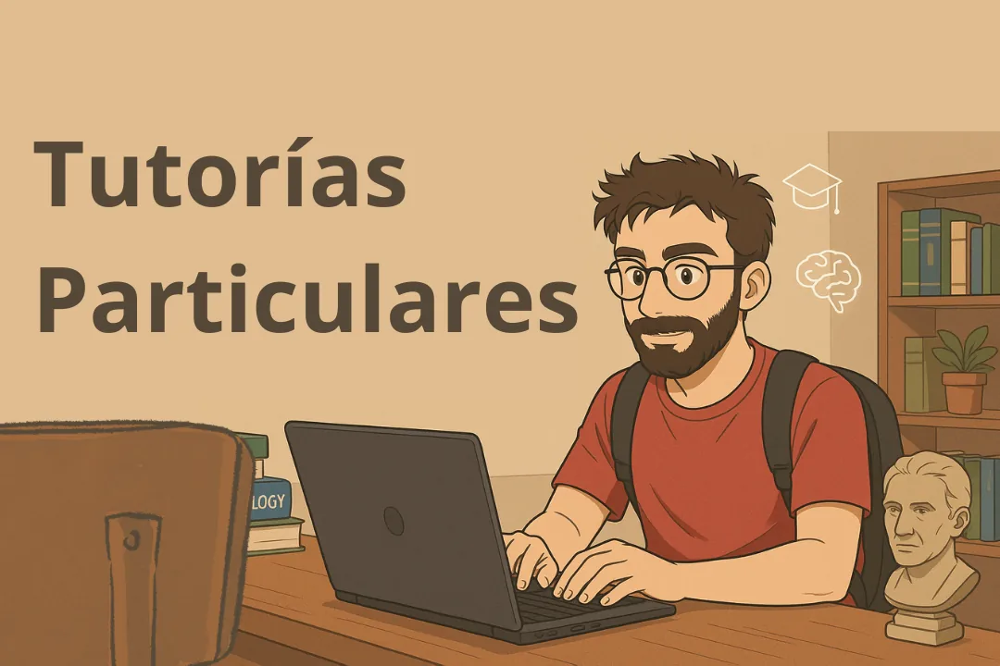
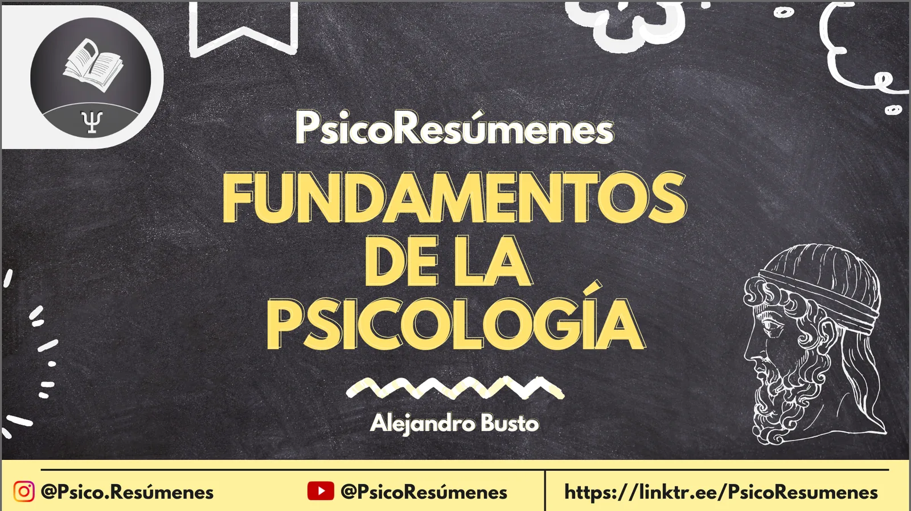
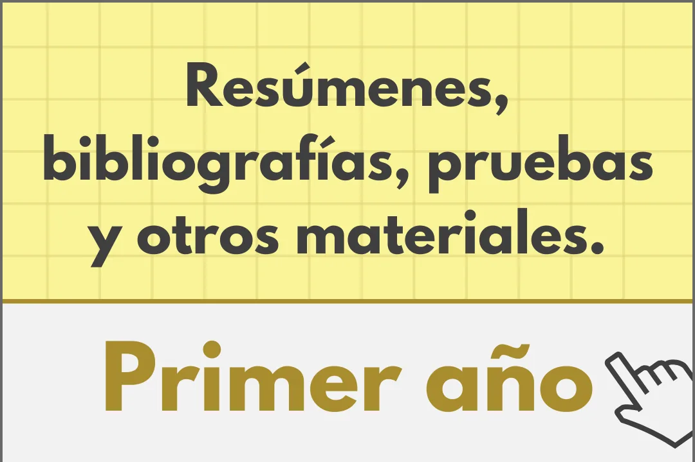
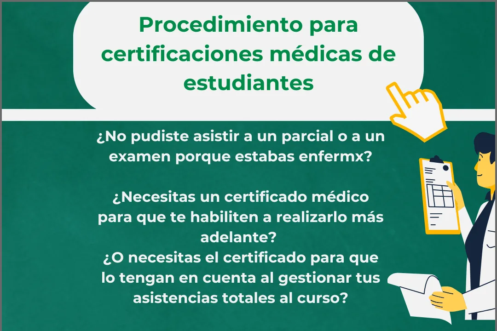

Resúmenes de Fundamentos de la PsicologíaFacultad de Psicología, UdelaR
|
Resúmenes de Fundamentos de la PsicologíaFacultad de Psicología, UdelaR
|
Resumen del texto "Carro, S. y de la Cuesta, P. (2007). Introducción a las Teorías Psicológicas"Resumen del texto "Carro, S. y de la Cuesta, P. (2007). Introducción a las Teorías Psicológicas"2/20/2025 Introducción a las Teorías PsicológicasPsicología: introducción La psicología no presenta una teoría entendida como cuerpo coherente y sistemático de conocimientos sobre un cierto sector real que constituye su objeto de estudio, y de hecho, ni siquiera existe acuerdo sobre cuál es su objeto de estudio. Existen varias corrientes, escuelas y teorías que a veces hasta son contradictorias entre sí. La sociología, antropología e historia, entre otras, presentan diversidad de cuerpos teóricos con diferentes posturas ante problemas referidos a los mismos, hechos, los cuales son interpretados y percibidos de diferente forma según “el lente” de la teoría. La psicología del siglo XX se caracteriza por la disolución del modelo de ciencia unificada y coherente. Existen varias teorías que si bien son similares en cuanto a los problemas que abordan, se caracterizan por definir de manera distinta el objeto de estudio. En esta diversidad podemos tomar como lo que “divide las aguas” a:
No se puede hablar de psicología ni de teoría psicológica, sino de diversas psicológicas y sus respectivas teorías. En estas existen “núcleos de cientificidad” con reduccionismos y contaminaciones ideológicas. En este sentido, esta disciplina nos enfrenta a una primera frustración: la disciplina en donde pensábamos encontrar explicación científica a los misterios del sentir, pensar, etc., no existe. Prácticamente nada de lo que esta disciplina sostiene puede presentarse como certeza. Está frustración y decepción suele dirigir a los estudiantes de la disciplina a adoptar “falsas soluciones”, como:
Introducirse en la problemática teórica de la psicología implica transitar en esta diversidad, de forma de poder formarse, pensar y producir inmerso en el conjunto de propuestas contradictorias. Asumir la contradicción e incertidumbre inherente de la disciplina y transformarlos en materia prima para la producción de conocimiento. La formación de psicólogos y el campo de la salud La formación de los profesionales de la salud se desarrolla en un contexto sociocultural impregnado por modelos neoliberales, basados en el mercado como único mecanismo social regulador y producir de crecientes niveles de exclusión. En este contexto, nos orientamos hacia un modelo de salud que cuestiona la tendencia individualista, lo cual implica superar esquemas mecanicistas y biologicistas, que considera la perspectiva de la propia comunidad e incorpora la dimensión ecológica de los procesos de salud enfermedad. Las concepciones de salud han variado a través de los tiempos. Se suele hablar de modelo biologicista asentado en la ausencia de enfermedad, o del modelo biopsicosocial como resultante de una suma de factores causales que favorecen o no el estado de equilibrio. También se menciona el modelo histórico social que considera la noción de proceso. La manera en que concebimos a la salud tiene mucha influencia en las decisiones que tomemos en torno a la investigación en el área de salud, en tanto los problemas que decidamos investigar, o los métodos que elijamos y los criterios que nos guiaran. Así mismo, las concepciones de salud que asumamos van a orientar también la enseñanza de la investigación y la práctica en ese campo. Los diferentes conceptos de salud están contextualizados en las ideas, conocimientos, prácticas y condiciones sociopolíticas de las comunidades. La problematización de las concepciones de ciencia, salud, sujeto, psicología, en el sentido ético social del conocimiento nos permite abordar problemas como las dicotomías presentes en los sistemas de pensamiento:
Historia La historia de la cultura muestra que existe una marcada relación entre la forma en que viven las personas en una determinada sociedad y las ideas que en esa sociedad se producen. Según Marx y Engels, todas las representaciones mentales de las personas tienen sus raíces en la vida material de esas mismas personas, en tanto el contexto social en el que vive. Según Jurgen Habermas, la historia de la sociedad humana puede reconstruirse teóricamente como el desarrollo progresivo de dos dimensiones de conocimiento: Dimensión técnica: posibilita el creciente dominio del hombre sobre la naturaleza Dimensión social o comunicativa: referida al progreso de las instituciones que regulan la convivencia entre las personas Ambas dimensiones están interrelacionadas, se influyen mutuamente, pero estan orientadas por diferentes intereses. Acerca de los aspectos históricos de la constitución de la psicología El pensamiento antiguo (Siglos VI a.c - V d.c) Los historiadores de la filosofía ubican el inicio de la psicología en los pensadores griegos que intentaban comprender el origen del mundo y de los fenómenos naturales. Mientras que los pueblos de oriente meditaban sobre los fenómenos de la naturaleza para poder lograr un conocimiento útil para resolver sus problemas cotidianos, los pensadores griegos especulaban ante el mundo, buscando verdades absolutas y objetivas. El primer periodo de la filosofía griega es el cosmológico o presocrático. Se inicia con Tales de Mileto y finaliza con los sofistas. La temática central de este periodo es la constitución del universo, y se pretende reducir la complejidad de la realidad a elementos simples. Tales descubre la unidad del Universo en un elemento: el agua. Heráclito por su parte postula como elemento último de la naturaleza a: el fuego. Hace hincapié en la inestabilidad y el cambio como aspectos más característicos. No encuentra en el Universo nada perdurable. Es visto como el iniciador de la dialéctica y la crítica del “sentido común”. Luego, Demócrito plantea que el Universo está constituido por pequeñas partículas de materia en movimiento a las que denomina átomos. Para Demócrito, los átomos constituían todas las cosas materiales pero también el alma de las personas, la cual estaba constituida por átomos más livianos y movedizos. Para este filósofo, todos los actos y pensamientos estaban determinados. Su postura estaba asociada al materialismo y al determinismo. Anaxágoras, por su parte, sostiene que el mundo no se explica por los elementos que lo constituyen sino por el orden de estos. Esta postura es opuesta a la reducción de la realidad a elementos simples, y es de especial significado para la psicología; constituirá la “piedra angular” de las escuelas de la Gestalt, las cuales marcan el fin de los atomismos psicológicos. Pitágoras, quien sostiene que la realidad se puede comprender mediante el número, y sus intentos de comprender el mundo cuantitativamente, anuncian al positivismo que domina el pensamiento científico del siglo XIX. Luego, la preocupación filosófica cambia, y ya no es el Universo el punto central, sino el hombre como sujeto cognoscente. Sobre finales del período presocrático queda colocada la piedra fundamental de la epistemología y surge el interés por las sensaciones como datos que el hombre recibe de la realidad. Es significativo ver cómo estos intentos por comprender el mundo guardan paralelismo con los caminos que 25 siglos después recorrerán los pioneros de la psicología en su intento por comprender la psiquis humana. Todas estas nociones anteriormente mencionadas serán las características de los intentos por construir una psicología científica de fines del siglo XIX y comienzos del XX. Sócrates consagra definitivamente la orientación antropológica de la filosofía, y con esto nace el idealismo objetivo, la prioridad del espíritu sobre la materia. Socrates creía inutil intentar conocer el Universo, pero creía que el conocimiento “del sí mismo” estaba al alcance de ser conocido. Este conocimiento era la clave de la virtud, y la ignorancia era la que conducía al mal. La verdad, para Sócrates, está implícita en el intelecto humano y solo necesita ser extraída y clarificada. Consideraba al hombre en relación con sus semejantes y con el Estado. Con él, se inicia el racionalismo y el dualismo alma-cuerpo, que luego, retomado por Descartes, marcará el pensamiento moderno. Sin embargo, fue Platon quien precisó esta distinción entre espíritu y materia. Para él lo auténtico no son las cosas, sino las Ideas. Jerarquiza las potencialidades humanas, adjudicando en primer lugar a la razón y en segundo al coraje. Su interés parece cercano a lo que siglos después se llamó “psicología de las facultades”. Aristóteles fue uno de los filósofos clásicos más importantes. Sus concepciones fueron retomadas por los pensadores de la Edad Media y dominaron el pensamiento occidental hasta los siglos XVI y XVII. A diferencia de Platón, este filósofo dice que las ideas no pueden existir separadas de las cosas. Retoma el dualismo alma-cuerpo y modifica su sentido. El alma y el cuerpo son dos elementos inseparables que constituyen al hombre y los denomina materia y forma. Jerarquiza la observación de las cosas como única forma de obtener conocimiento. Esta es la diferencia más importante entre Platon y Aristoteles, el papel de la observación. Esto será luego retomado por pensadores medievales y sentará las bases de la coexistencia entre ciencia y religión. El problema de si las cosas que percibimos son reales o son creadas por el acto de percepción mismo (percepción vs intelecto) es el origen de la dicotomía subjetividad-objetividad. El pensamiento medieval (Siglos V a XV) Este periodo encierra el proceso que lleva al derrumbe de la ciencia clásica y el surgimiento de una nueva concepción del conocimiento, que recogerá y desarrollará el renacimiento. La actitud general en este periodo era mística. El orden divino regía por igual el mundo social, la naturaleza y el espíritu científico. Las enfermedades se clasificaban en:
Los enfermos mentales eran considerados herejes, adoradores paganos que voluntariamente permitían que los demonios ocuparán sus cuerpos y dirigieran sus vidas. Está concepción del pacto con el demonio resultó un buen recurso de control social y permitió la institución de “La inquisición”. La brujería posibilitaba el azote a los campesinos paganos y de las mentes revolucionarias que cuestionaban la explicación teológica de la ciencia, así como el orden social establecido. Mientras que en Europa se debatía entre brujos y doctores, en Oriente y las regiones europeas dominadas por los árabes desarrollaban una actividad científica totalmente alejada del idealismo occidental. Sus contribuciones en el ámbito de la psicología muestran detalladas descripciones, clasificaciones y tratamientos de las enfermedades mentales. Averroes es considerado como uno de los máximos representantes de la cultura arabe del siglo XII. En Europa, la Iglesia se convirtió en depositaria de la cultura y la doctrina de Dios fue la ideología oficial de la Edad Media, a través de los Padres de la Iglesia, clérigos, filósofos que se preocuparon por el problema de la relación entre la fe y la razón del hombre. De estos, los más influyentes fueron San Agustin y Santo Tomas de Aquino. San Agustin fue un representante del neoplatonismo, y su doctrina planteaba la sobredeterminación divina de los hombres. Santo Tomas se apoyaba fundamentalmente en Aristoteles, subordinaba la teoría de materia y forma a las leyes divinas, y sostenía que si bien no puede existir materia sin forma, si puede existir forma sin materia, que es la existencia de Dios. El mérito de ambos, principalmente de Santo Tomas, permitió que las teorías clásicas de Aristoteles y Platón sobrevivieran al mundo medieval y no se perdieran debido a la intolerancia eclesiástica de la religión. El dogmatismo fue la característica principal del pensamiento de este periodo, la búsqueda de verdades inamovibles, cuyo cuestionamiento estaba vedado a la mente humana. La ciencia se expresaba mediante la escolástica, postura filosófica interesada en la relación entre conocimiento y fe. Los escolásticos eran estudiosos de libros pero no investigadores. Fue la actitud dogmática lo que le dio el nombre de oscurantismo a este periodo. El pensamiento renacentista y moderno En este período ocurre la crisis de la sociedad feudal y el ascenso de la burguesía. Esto modifica sustancialmente el peso de la religión en la sociedad. La autoridad espiritual y material de la iglesia pierde poder, especialmente en lo que concierne a su relación con la ciencia y la filosofía. En el interior de la iglesia surge la reforma y la ciencia comienza a separarse de la religión. Se cambia la noción de “ciencia por la ciencia misma” por la de hacer ciencia con el objetivo de incrementar el conocimiento con intenciones de aumentar el poder del hombre sobre la naturaleza. Hasta ese momento el pensamiento filosófico se había centrado en el objeto de conocimiento, pero ahora cambia por la preocupación por el método como elemento central del proceso de conocimiento, con independencia del objeto o campo al que se aplica. Se considera que la filosofía se centra en lo metafísico. Francis Bacon fue el primero en plantear la elaboración de un método científico basado en la interpretación materialista de la naturaleza. Descartes fue uno de los más relevantes pensadores del periodo. Su obra puede caracterizarse como una clara reacción al dogmatismo de la escolástica medieval. Al dogma Descartes opone la duda, la cual es el elemento central de su método. Al terminar su razonamiento Descartes se encuentra en posesión de la certeza de todo lo que había dudado. La diferencia con la escolástica medieval no radica en los contenidos de sus creencias sino en negar su calidad de dogmas para convertirlas, a través de un rodeo metafísico, en “verdades racionalmente establecidas”. Uno de los aspectos más negativos del pensamiento moderno es su concepción dualista. La existencia de dos sustancias, una material y extensa y la otra inmaterial: el pensamiento. Descartes fue un radical mecanicista. Todas las acciones del cuerpo humano pueden explicarse mecánicamente. Introduce el concepto de reflejo que luego retoman las concepciones mecanicistas del comportamiento. Con la separación entre cuerpo (física) y mente (metafísica), ubica el cuerpo máquina en el ámbito de la ciencia, dejando los fenómenos mentales para la especulación metafísica. Decisión que más adelante constituirá un obstáculo para el desarrollo de la psicología como ciencia. El planteo cartesiano, separador de los problemas del alma de los cuerpos, deja abierto el camino para el avance de las ciencias naturales en forma paralela y coexistentes con los planteos religiosos acerca del alma y el comportamiento humano. Estos últimos serán retomados por Watson, 300 años más adelante, quien se pregunta porque no es posible estudiar la conducta humana con el mismo rigor científico que se estudia a la conducta animal. Hobbes escribió tratados sobre la naturaleza humana y la relación del hombre con el Estado. “El Leviathan” constituye una justificación del poder absoluto del gobernante, basado en la tendencia individual que tiene todo ser humano a satisfacer sus propios deseos a costa de los demás, resolviendo esto mediante el cambio del derecho natural a ejercer el egoísmo por la seguridad, lo cual se garantiza delegando los derechos de las personas a una autoridad central: el gobernante. Este planteo del conflicto entre la naturaleza humana y la cultura es retomado por Freud a principios del siglo XX. Hobbes, influido por la obra de Galileo, intenta explicar la actividad humana basándose en el movimiento. Sostiene que la sensación, la cual es la fuente del conocimiento, se concibe como “movimiento comunicado al cerebro por el objeto externo. En este sentido, las ideas estaban determinadas por los objetos, y la transición entre una idea y otra se vincula a la relación que guardaban en la experiencia original. Esto implica el principio del asociacionismo. La psicología de Hobbes fue materialista, mecanicista y determinista en tanto todo fenómeno psíquico está ordenado de acuerdo a un cierto “orden natural”. John Locke fue quien planteó el problema que diera impulso al empirismo inglés. Para él, la mente era “un papel en blanco” sobre la cual, en función de la experiencia, se imprimen las “ideas simples” que componen el pensamiento humano. Estas “ideas” se inscriben en la mente a través de las sensaciones y la reflexión. Desde Locke parten distintas concepciones psicológicas:
George Berkeley radicaliza la esencia idealista del planteo de Locke y sostiene que “existir es ser percibido”. No hay sustancia material sino sólo cualidades sensibles. La existencia de las cosas se asocia a la percepción de Dios que es el factor ordenador de la naturaleza. Una de las principales contribuciones de Berkeley a la psicología reside en el estudio de la percepción visual. Su principal interés era la percepción de la distancia y la profundidad, desarrollando sus concepciones dentro del marco del empirismo asociacionista. Aunque más bien, desde el punto de vista del desarrollo de la psicología, no fue justamente el desarrollo de los conceptos de Berkeley, sino sus críticas, las que influyeron el pensamiento posterior. Otro problema psicológico que no escapó a las consideraciones de Berkeley fue la existencia de ideas abstractas. Este planteo sería sistematizado con claridad, más adelante, a partir de la controversia sobre relaciones entre pensamiento, abstracción y lenguaje (Piaget, Vigotsky, Wallon) David Hume cuestionó la existencia no ya del concepto de materia como producto de la mente humana, sino de las propias facultades mentales, llevando al extremo la idea de tabula rasa propuesta por Locke. No solo no hay ideas innatas, sino que tampoco existen facultades innatas. Cuestiona la idea de causalidad y plantea que la relación entre las representaciones mentales proviene de la asociación de sucesos por contigüidad o sucesión. Autores como David Hartey o Stuart Mill llevan el concepto de asociación de ideas a la categoría de primer principio de la mente humana. El asociacionismo fue una de las nuevas escuelas de psicología. Los filósofos alemanes criticaban la concepción de la mente humana planteada por la escuela inglesa. Emanuel Kant sigue al movimiento crítico iniciado por Hume. Este entendía que el mundo tal como lo conocemos posee un orden, que no proviene de la experiencia pero tampoco puede ser negado, por lo tanto debe proceder del espíritu mismo que impone sus propias leyes al mundo de la naturaleza. La mejor contribución de Kant a la psicología no la hizo como psicológico, sino como filósofo crítico. Postuló el examen del intelecto humano de una forma analítica y rigurosa, lo que planteó, más allá de los criterios científicos adoptados, que la psicología no pertenece al terreno metafísico. Influyó en el concepto de fenomenología, concepto que sería tomado luego por la psicología existencial, planteando que el único mundo significativo para el individuo es el mundo tal cual él lo recibe. La idea de la mente como una organizadora activa de la experiencia es sostenida por la escuela racionalista alemana, representada por otros autores, y cuyas contribuciones fueron conformando el desarrollo de la psicología. Leibnitz, cuyo planteo del paralelismo psicológico contribuyó a despejar el camino hacia una concepción naturalista de la mente. Hertbart con la crítica al análisis atomista de la mente, que él consideraba como un todo, crítica que retomaría en forma más radical la escuela de la Gestalt. Uno de los intereses de Hertbart fue aplicar la psicología a la práctica educacional. En el siglo XIX la orientación naturalista impregna el ambiente psicológico, tanto en relación a su objeto como a la forma de abordaje. El conocimiento era empírico, pero aun le falta una etapa clave: hacerse experimental. Ejes que atraviesan el campo de lo psicológico La cuestión humana Cuando se piensa en el tema del hombre, lo problemático no son las soluciones o las diferentes posturas presentes en cada disciplina, sino el problema mismo. En lo que respecta a la realidad humana, desde el punto de vista filosófico, al principio las alusiones son apenas incidentales e indirectas, después el interés va en aumento hasta constituirse en el único tema de meditación filosófica, y aun así, después de tantos años de análisis, no estamos más adelantados que los sofistas con respecto al problema del hombre como objeto de conocimiento. Lo que sí podemos hacer es definir diferentes épocas y momentos del pensamiento humano respecto a este tema. En occidente, gran parte de la historia del hombre es más bien la historia del descubrimiento del hombre como objeto de conocimiento. En el comienzo, lo biológico y lo corporal fue la puerta de entrada al tema del hombre, luego el interés es dirigido a definir aquello que lo diferencia de las otras cosas, y se hizo hincapié en la dimensión política de este. Socrates contribuye en lo que respecta a la moral, y Platón se pregunta por la verdad del conocimiento. Al final, la realidad humana era una de estas cuatro cosas: fisica, etica, moral o lógica El cristianismo da un giro esencial a este tema e incorpora una nueva dimensión: la interioridad. Con San Agustin el conocimiento del hombre se convierte en una reflexión, en una introspección, diferente al movimiento hacia afuera que implicaba la actitud de contemplación de los griegos. Este es el primer intento de colocarse además, como sujeto de conocimiento. El alma ocupa el centro de atención del pensamiento medieval. Los escritos de Santo Tomas no dicen algo novedoso, sino que recoge ideas de Platón y Aristoteles y brinda una concepción organizada del hombre sustentada en este momento histórico. Plantea dos formas de ser: carnal o espiritual. (nivel ontológico) Descartes renueva este planteamiento pero ya no desde el punto de vista ontológico, sino desde el gnoseológico, y se pregunta sobre el cómo se puede conocer. El camino de la ciencia. El problema de los paradigmas La división de “ciencias del hombre” y “ciencias de la naturaleza” no es más que una nueva versión de la idea planteada por el pensamiento filosófico helénico. El hecho de que existan tiempos de reacción constantes en cada sujeto permitió considerar a los fenómenos sensorio-motores de una manera diferente, lo cual luego derivó en la apertura de un nuevo campo en las ciencias de los fenómenos psicológicos donde el movimiento positivista encontró terreno para desarrollar sus postulados. Los aportes del positivismo en el pensamiento psicológico fueron muchos. El desarrollo de los tests psicológicos inició el camino de la psicología aplicada, el behaviorismo watsoniano, y el neoconductismo de postguerra aseguraron a la psicología un lugar destacado en el mundo científico. Lo cuantitativo surgiría de la necesidad de evaluar, y como consecuencia reafirmar un estatus científico de la psicología en la estabilidad del número. Se abrió el camino al estudio de los mecanismos de defensa y el proceso psicodiagnóstico. La confianza en el paradigma positivista hizo que se investigara tanto en la medición de los fenómenos psíquicos que la frenética búsqueda enfrentó a los científicos a situaciones que no podrían ser totalmente analizadas por el factor numérico. Como un movimiento pendular, comienza a desarrollarse la psicología comprensiva y el campo psicológico empieza a ser el marco de enfrentamiento entre un paradigma que veía a la psicología como otra ciencia natural, como es el tratamiento empírico-positivista, y la psicología dinámica contemporánea en surgimiento. El compartir un paradigma hace que los científicos estén sujetos a las mismas reglas, pero no necesariamente deseosos de aceptar rápidamente los nuevos hechos y teorías. Lo que sucede en realidad, según Plank, es que la verdad científica no se presenta de manera que convenza a sus oponentes, sino que estos van desapareciendo poco a poco y surge una nueva generación que está familiarizada con “la verdad” desde el principio. El proceso de investigación Pensar en el “descubrimiento” como un acto único y simple, es un error. Este no es ni simple ni es un acto único, sino que representa un proceso que involucra el reconocimiento de que algo existe, como de que es. El proceso de investigación organizado por los científicos pertenece al conjunto de su actividad intelectual. La universalidad de las leyes en el campo de las ciencias sociales, no es la de un concepto al cual se ajustaren sin discontinuidad las situaciones particulares, sino que se refieren a la relación entre lo universal y lo particular en un momento dado. Existen por un lado leyes de la naturaleza y por otro, normas sociales. Unos rigen los fenómenos de la naturaleza y otros los comportamientos humanos. Los positivistas suponen que estos tipos de fenómenos son autónomos entre sí. Según esta postura el conocimiento válido es aquel procurado por las ciencias experimentales y deben excluirse del ámbito científico las cuestiones prácticas de la vida diaria. Burnear plantea que, preguntarse por la realidad humana es complejo. Una teoría del desarrollo humano no es solo un intento de comprender y explicar la naturaleza humana sino que debido al carácter de la cultura, también se crean en el proceso, los mismos sucesos que se intentan explicar. No hay ninguna forma de desarrollo posible que sea independiente de las oportunidades de realización que proporciona la cultura. La cuestión objetividad-subjetividad no solo atraviesa la validez o no de un conocimiento, más bien adquiere múltiples transversalidades. Existen problemas que aparecen en la historia, una y otra vez, y en cada período histórico adquieren distintas ópticas, pero son los mismos problemas solo que reformulados. La cuestión de cuerpo-mente es un problema fundamental en relación a otros, si lo centramos en la escisión misma. Hay cosas separadas y opuestas que en otros momentos históricos aparecen complementarias o incluso que una domina sobre la otra. En el periodo donde la filosofía pierde hegemonía o comienza a perderla, es donde surge la psicología científica. Se produce una escisión del conocimiento: filosofía y ciencia. La ciencia estudia el cuerpo-máquina y la filosofía especula metafísicamente sobre los fenómenos mentales. Las cosas existen fuera del hombre. Se observan las modificaciones externas, que son las únicas existentes. Se encuentra presente el carácter explicativo de las ciencias. Actualmente, sumergirse en los conceptos de objeto, objetividad u objetivismo nos revelará que ya no hay objetos como materiales, distintos al sujeto, sino que hay una cantidad interminable de estos. Con el avance tecnológico aparece un nuevo objeto: el virtual. Esta nueva realidad, la realidad virtual, produce un impacto en los modos de manejo y utilización de la imagen, en nuestra capacidad para representarnos el mundo. Método y objeto El método se halla en el “saber vulgar” pero es solo en el cientifico y filosofico donde alcanza su madurez. El método es un programa que se dirige a la obtención del saber, por lo cual el método debe distinguirse de cualquier otro procedimiento cuyo fin no sea el saber mismo. La investigación de este es asunto de la filosofía y lleva implícitas indagaciones de carácter gnoseológico, metafísico y aun de la concepción del mundo. Si un método es un camino (hacia el conocimiento), un modo de acercarse a la realidad, la concepción de realidad será determinante para el método. Para cumplir con la premisa de conocimiento se hace indispensable la existencia de una triple adecuación entre el objeto a conocer, el método a emplear y el acto de conocimiento realizado, es decir, una coherencia epistemológica entre niveles ónticos, metodológicos y gnoseológicos. Las dificultades que pueden encontrarse al tratar de definir las ciencias humanas provienen, al menos parcialmente, de la utilización de términos que parecen unívocos pero que en realidad revelan una multiplicidad de significados. El problema metodológico principal de las ciencias humanas, y por lo tanto, de la psicología, es saber si se puede aplicar a su objeto de estudio el mismo tipo de inteligibilidad operativa que el que se verifica en otras ciencias. La psicología científica nace desde el dualismo cartesiano, pero en vez de adaptar el método al objeto de estudio (los hechos psicológicos), la investigación psicológica los sometió a los prejuicios y conceptos físico-matemáticos. Construir una ciencia de lo psíquico implicó hacer de los fenómenos psíquicos “hechos tangibles”. La transportación de los métodos de la física a la investigación psicológica fue necesaria para legitimar la tan anhelada “objetividad”. Ortega y Gasset dicen que el error radical de la psicología del siglo XIX está en el mismo punto de partida de esta, en la imprecisión con que se acota el término “hechos psicológicos”. Objetividad vs subjetividad De acuerdo al método cartesiano, se debe reducir los fenómenos complejos a partes elementales para luego reunirlos, sea experimental o conceptualmente, a fin de hacer “objetivo” al fenómeno. En el estudio del “yo”, del ser humano, Descartes separa lo que podría ser científicamente investigado de lo que no podría serlo, pero con el tiempo esto se convirtió en un obstáculo epistemológico. El método de las ciencias naturales ya no representa un ideal, sino más bien una resignación. La ciencia no es un método o un conjunto de verdades, hechas de una vez y para siempre. La ciencia se construye, tanto el conocimiento como los medios instrumentales para obtenerlo son cambiantes y constituyen en su totalidad un proceso complejo que dista de ser lineal y unidireccional. La importancia del problema objetividad vs subjetividad radica en que constituye el fundamento silencioso de la práctica. En este sentido, para la psicología la cuestión es saber si se puede aplicar a su objeto de estudio el mismo tipo de método y criterio de validez que el que se verifica en las otras ciencias. Transicion Edad Media - Modernidad: Las condiciones sociohistoricas El periodo precientífico es el que se corresponde con las etapas históricas conocidas como Antigüedad y Edad Media, en estos, la psicología se halla claramente unida a la filosofía. El periodo siguiente, es el de la psicología científica o psicología experimental. Las causas principales que prepararon el surgimiento de la ciencia moderna fueron las económicas, sociales, políticas, las cuales hicieron posible las innovaciones técnicas de la época. Las diversas necesidades de este periodo derivaron en que se lograran avances tecnológicos, sentando así las bases de un modelo fuerte de ciencia. Las causas políticas se deben a la crisis del sistema feudal y el surgimiento de los estados nacionales y las monarquías absolutas. Las causas económicas refieren a la aparición del comercio como actividad central que enriquece y hace surgir a la clase burguesa, a los banqueros, familias adineradas, etc. Las causas sociales tienen que ver con la burguesía, que como clase adinerada y con poder económico para financiar viajes y mercados logran poder político, además de tener la posibilidad de financiar a las monarquías en crisis por los altos costos de las lujosas cortes europeas. Debido a todo esto, la nobleza pierde poder político y la burguesía pasa a ocupar cargos en el Estado. Las causas tecnológicas estan relacionadas a la construcción de nuevas naves, más grandes, y combinaciones en los velámenes que permiten alejarse de las costas hacía mares abiertos. Esto deriva en la creación de instrumentos de navegación más precisos. La invención de la imprenta se reconoce como uno de los hechos más revolucionarios en lo que hará a la difusión escrita y con ello el acceso a la información. Es en este contexto nuevo, con nueva visión, donde el interés por los aspectos psicológicos debe hacerse un lugar propio. La cientifización de la psicologíaDe la fisiología a la psicología experimental En el siglo XIX la ciencia tiene un lugar muy importante en los procesos productivos. El científico independiente del siglo XVII, creador de sus propios instrumentos, en el siglo XVIII cambia su taller por el laboratorio y en el siglo XIX se integra definitivamente a las universidades y a la industria. El científico comienza a recibir salario y la industria comienza a interesarse por la ciencia. El desarrollo tecnológico hacía imprescindible la alianza entre capital y conocimiento. La física, la química y la biología fueron los campos de más interés que marcaron la ciencia. El espíritu positivista dominaba el ambiente científico y determinó la proliferación de laboratorios en todas las disciplinas. En esta época, la ciencia era lo que se producía en los laboratorios, y los procedimientos experimentales eran un requisito indispensable para que el conocimiento generado fuera respetado y valorado socialmente. En este contexto, hacer ciencia es aplicar una metodología. Las principales consecuencias de la mentalidad positivista en este siglo son:
Esto se asocia a la “neutralidad del científico”. Su personalidad, sus afectos, deben mantenerse lo más alejados posibles de la actividad científica garantizando su asepsia. En este marco contextual es que surgen las investigaciones neurológicas que preceden a la psicología experimental. Fue Müller quien despertó el significativo interés en este campo, seguido por Helmholtz quien desarrolló procedimientos experimentales para estudiar la fisiología óptica y auditiva, sin embargo, fue su investigación sobre la velocidad de reacción lo que transformó el interés fisiológico en psicológico. La curiosidad de los científicos pasó paulatinamente de la anatomía de los órganos de los sentidos al estudio de su funcionamiento, pero fue solo cuando se percataron que entre la percepción y la cosa mediaban procesos muy complejos, que surge el interés por los fenómenos mentales. Contemporáneamente a esto, otro grupo de científicos en Leipzig desarrollaban estudios acerca de la percepción y sensación. Uno de ellos era Weber. Weber descubrió que la habilidad para percibir una diferencia de magnitud, era una proporción constante que podía calcularse matemáticamente, y sus investigaciones demostraron que esta proporción era diferente según el sentido que se estudiará. Fechner consideró las investigaciones de Weber como relevantes, y es uno de los antepasados más pintorescos de la psicología. La ambición de Fechner por encontrar la relación entre el mundo físico y el mundo de la mente lo llevó a concebir la idea de que podía existir una relación registrable y cuantificable entre las sensaciones y los estímulos que las producían. Llamó Psicofísica a la ciencia cuyo objetivo sería estudiar y comprobar esta relación. Fue justamente en el marco de esta búsqueda que conoció las experiencias de Weber, lo cual confirmaron sus hipótesis y las llamó “ley de Weber”. Los resultados de las investigaciones de Fechner fueron publicados en el Tratado de elementos de psicofísica que constituyó el lanzamiento oficial de la disciplina. La importancia de la obra de Fechner no radica en el mundo que pueda representar, sino en los procedimientos experimentales que desarrolló para demostrar sus hipótesis. La mediación de la experiencia sensible a través de métodos exactos, representada por las investigaciones de Müller y Helmholtz por un lado, y la psicofísica de Fechner por otro, marcaron el comienzo de una nueva época en el interés por los fenómenos psíquicos, que cristalizada en él, surgieron de la psicología como ciencia experimental fuertemente asociada a las ciencias naturales. Cuando la fisiología demostró que los métodos experimentales podían aplicarse a los procesos mentales, la psicología comenzó a desprenderse de la filosofía, y esto permitió a la psicología abandonar la cátedra y pasar al laboratorio, en otras palabras, constituirse como una ciencia independiente. Si bien todos hemos leído que la psicología surgió del laboratorio de Wundt, este laboratorio no fue el primero donde se realizaron experimentos psicológicos, aunque sí fue el primero en dedicarse exclusivamente al estudio de fenómenos mentales. Las investigaciones del laboratorio de Wundt incluían:
Este laboratorio se convirtió en modelo para los primeros psicólogos experimentales, que eran también discípulos de Wundt. La psicología experimental ya estaba presente en el ambiente antes de que los trabajos de Wundt tuvieran difusión. La orientación naturalista en el estudio del hombre se percibía ya en las ideas evolucionistas de Darwin, tres décadas atrás. En Inglaterra Galton trasladaba las ideas evolucionistas a la aplicación de los primeros cuestionarios psicológicos, inicio de la psicometría, Francia se interesaba por los fenómenos anormales a través de los trabajos de Janet, Charcot y otros. La gran contribución de Wundt fue reunir en un sistema organizado de principios los conocimientos existentes hasta ese momento. Su libro Fundamentos de psicología fisiológica es considerado como el primer manual de psicología. Wundt define allí la psicología como la ciencia de la experiencia inmediata, de los hechos de conciencia, sus relaciones y combinaciones, y las leyes que los rigen. Los métodos utilizados fueron la introspección y el método experimental. La psicología de Wundt fue básicamente de corte fisiológico e individual. Más adelante a finales de su vida pública “Elementos de Psicología Popular” donde plantea el abordaje de los fenómenos sociales como el lenguaje, el arte, a través de una metodología diferente: el método histórico. El método histórico implicaba el estudio del desarrollo del hombre y su organización cultural. ¿Se puede sostener que la psicología nace como ciencia al adoptar los procedimientos experimentales? Esto implica compartir una concepción positivista de la ciencia, según la cual “ciencia es conocimiento que se obtiene mediante el método científico”, la psicología en está etapa carece de una definición clara de su objeto de estudio. El psiquismo humano, en tanto debía traducirse a fenómenos estudiables experimentalmente, queda reducido a un cúmulo de sensaciones, percepciones, contenidos de conciencia y reacciones fisiológicas que oscurecen la esencia de la problemática propia de la psicología. La psicología experimental no pudo escapar a los lugares comunes que caracterizan el concepto de ciencia del momento, más allá de que su propio objeto de estudio era diferente al de las ciencias naturales. La objetividad que se pretendía alcanzar con el método experimental estaba en contradicción con las características propias de lo que se pretendía conocer: la variable e irrepetible naturaleza humana. El sujeto quedó transformado en una compilación de procesos mentales, variables matemáticas abstractas, de alguna manera vaciados de contenidos. La transposición de la metodología de las ciencias exactas se convirtió así en el aval de todo conocimiento, alejándose cada vez más de lo que pretendía estudiar. La nueva psicología fisiológica, sistematizada y desarrollada por Wundt, creó un movimiento de agitación que estimuló el desarrollo de la investigación psicológica. Sin embargo, en un lapso relativamente corto, la nueva generación de psicólogos comenzó a criticar duramente su obra. Estas críticas dieron origen a las escuelas modernas, el conductismo, el psicoanálisis, la Gestalt. Bibliografía
|
 Tutorías particulares Tutorías por Zoom, tutorías grabadas y clases de consulta sobre varias materias de facultad. Consulta por más información al celular 098 053 967 ¡Leé más acá!  PsicoTutoría de Fundamentos de la Psicología PsicoTutoría sobre temas de la asignatura, útil como material complementario para prepararla. ¡Mirala acá!  Resúmenes y otros materiales de primer año En esta página podrás encontrar resúmenes, bibliografías, autoevaluaciones y tutorías de diferentes asignaturas de primer año. ¡Descargalos acá!  Certificados médicos ¿Qué hago si me enfermo el día del examen? ¿Cómo tramito el certificado médico? ¿Que me posibilita presentar un certificado médico? ¡Leé más acá! Modalidades de exámenes Enterate de las características de todos los exámenes de la carrera. ¿Qué modalidad es? ¿Cuántas preguntas son? ¡Lee más acá! |